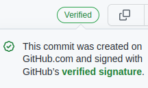

Introduction
It’s not a long time ago that I have started to use Git. I am constantly discovering new things. All this time I was reading articles, posts on Stackoverflow etc. One day I was watchsaw a Verified badge on someones’ repository commit history.
Then the first questions arised.
“What is that ?”
“Why I don’t have it ?”
“Do I need that ?”
In reality, when you have make a commit via your GitHub account your commit is indeed marked as verified but the majority of the users is working locally thus they have set SSH. Those are in need to set up GPG in order to sign their commits and push their changes.
What if I do not verify
THe thing is that I realised
A
But then
Create PGP key
GitHub has a wonderful explanation , so I won’t bother you to say the same things. You can see their guide here
For brevity, I will make a TL;DR version :
Signing your commits
After that you can continue your usual workflow with Git with just a little change. Now you have to sign your commits. To do that you have to set the option -S as follows :
git commit -S -m "Edit something"Then, you will be prompted to a new window in order to complete the password of your GPG key. And here it is, my first verified commit :
Let’s take a closer look :

But there is more. On GitHub settings (Settings > SSH and GPG keys) there is also the option to warn others if a commit is not signed. If I enable it :
then it marks all my unsigned commits (before and after the change) as unverified, as a warning to others. I guess it’s good if someones’ intention is to use only signed commits.
To sum up
In GitHub, Commit = Sign + Commit
Locally,
- bash git commit -m "..." = Commit
- bash git commit -S -m "..." = Sign + Commit